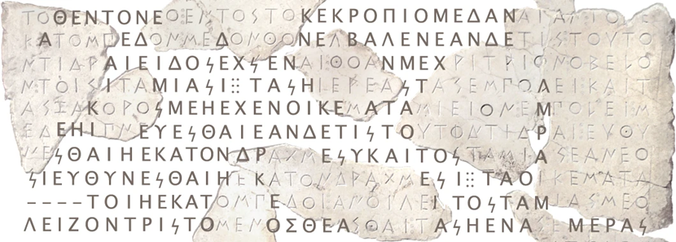

2022年11月美國 OpenAI 公司發表聊天機器人 ChatGPT，很快便佔據全球主流媒體版面，一時之間 AI 成為各大領域關注的焦點。臺灣各界也高度重視人工智慧的發展，關注 AI 所帶來的機遇與挑戰。歷史學自然不例外，2024 年歷史學門主管會議便以「AI時代對歷史學研究的挑戰」為題進行研討，顯示歷史學者對此議題的高度關注。
他山之石，可以攻玉。當我們思考 AI 對歷史學的影響時，不妨先看幾個已經成功落地的例子。早在 2022 年 3 月，權威科學期刊 Nature 就刊登了 “Restoring and attributing ancient texts using deep neural networks” 一文，探討人工智慧如何應用於古典歷史研究。研究團隊以近八萬份古希臘銘文為資料集，利用深度神經網絡訓練模型，嘗試預測殘損銘文中的缺字部分，並將此模型命名為 Ithaca。

古希臘銘文是研究西方文明史的重要材料，它們幫助學界理解古代西方的思想、語言與文化。然而，隨著時間推移，許多銘文已出現缺損，使得原文不易釋讀。Ithaca 模型可用於恢復受損文本；根據研究團隊統計，在 Ithaca 輔助下，歷史學家判讀受損銘文的正確率可由 25% 提升至 72%，大幅提高對文本的掌握度。除此之外，Ithaca 也能提供銘文寫定時間與所屬地理位置的推測，協助研究者建立重要的時空背景資訊。
三個要件
AI 能夠幫助歷史學者處理過去難以解決的問題，但前提是要滿足三個條件。第一，是必須有一個明確的歷史學課題。研究問題越清楚，AI 成功介入的可能性就越高；而課題越具有挑戰性，AI 與歷史學碰撞出的火花也往往越燦爛。
以 Ithaca 為例，研究團隊面對的是古希臘歷史中的一項核心難題：一組採用三欄西格瑪日期書寫慣例的銘文，究竟應當寫定於何時？這組銘文屬於公元前 5 世紀，涉及雅典帝國形成時期的重要政治法令，因此其年代判斷與雅典帝國史的理解息息相關。Ithaca 對這組銘文的判定是公元前 421 年，而這個結論恰好與近年學界的新論點相互呼應。
類似的方法也能應用到其他類型的歷史研究。與 Ithaca 問世幾乎同時，Science 刊登了 “Forgotten books: The application of unseen species models to the survival of culture” 一文。這篇研究透過生態統計模型探討一個耐人尋味的歷史問題：中世紀歐洲究竟有多少書籍毀於天災與戰亂？研究團隊估計約有 91% 的書籍已經消失，僅 9% 留存至今，並發現島嶼地區如冰島、愛爾蘭的書籍損毀率低於歐洲大陸。這類研究也提醒我們，歷史學與其他學科的方法整合，往往能帶來新的理解。
第二個要件，是要有足夠且有效的資料提供機器訓練。Ithaca 最終使用 78,608 份銘文資料進行訓練，但這些資料並非原封不動拿來使用。研究團隊先從更大規模的原始資料庫中刪除重複文本與過短內容，再篩選出同時具備時間與地點資訊的資料，最後才得到足以支撐模型運作的高品質語料。這也呼應資訊科學常說的一句話：Garbage in, garbage out。
第三個要件，是要有合適的工具。與前兩者相比，工具的選擇更容易受到時代技術的限制。Ithaca 使用的是 Transformer 架構，藉由自注意力機制更有效掌握文字上下文。研究團隊在此之前也曾開發過另一個模型 Pythia，但因其採用循環神經網絡（RNN），在處理文字脈絡時的效果不如 Transformer。兩者相比，Ithaca 對古希臘銘文缺字補遺的表現更佳，也因此成為歷史研究中的代表性案例。
透過這些案例，我們或許可以更清楚地看見：AI 並不是取代歷史學者，而是成為一種新的研究工具。它的真正價值，不在於給出「唯一正確答案」，而在於幫助研究者更快地整理資料、發現模式、提出新的問題，從而開拓歷史研究的可能邊界。
- Yannis Assael, Thea Sommerschield et al., “Restoring and attributing ancient texts using deep neural networks,” Nature (2022).
- “Forgotten books: The application of unseen species models to the survival of culture,” Science (2022).
- Pythia 為 Ithaca 問世前的相關古希臘銘文補遺模型。